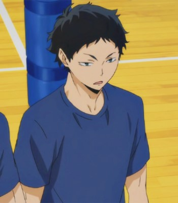
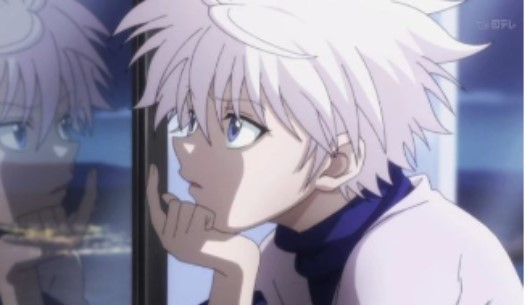
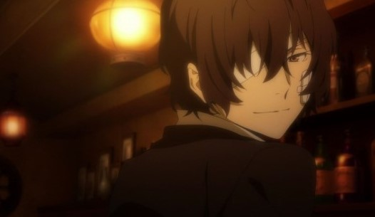
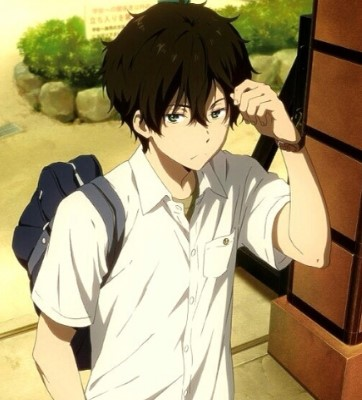
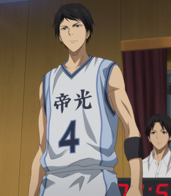
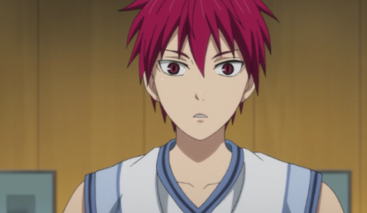
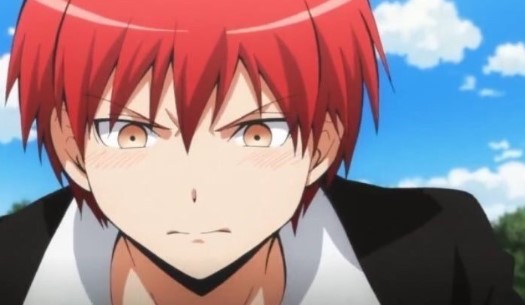
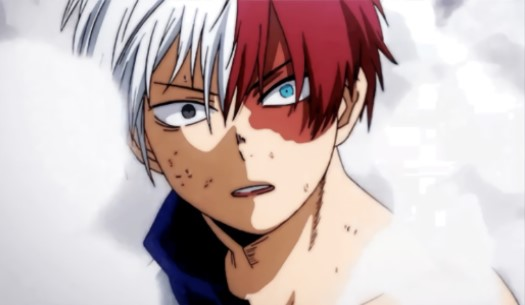
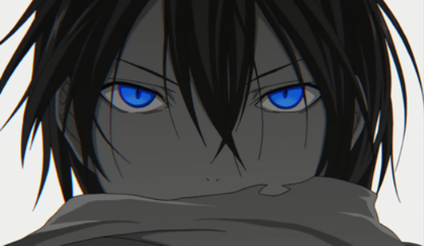

덕질 경력 10년 이상의 사람 '장수행', 그의 취향은 무엇인가? 스스로도 모르는 자신의 취향을 최애를 통해 분석해보도록 하자.

아카아시 케이지
출현 애니메이션 : 하이큐!!
출생년도 : 1995年 12月 5日
외모 : 검은색 곱슬 머리에 약간 나른해 보이는 청록색 눈동자를 가졌다.
뇌피셜 성격 :
명대사 및 명장면 :『…エ―スはもうちょっと成長しないとな。』, 『 何も考えずにクロス打ってください。 ただ気持ちよく, 道は作りますので。』
성우 : 오오사카 료타
기타 :

키르아=조르딕
출현 애니메이션 : HUNTER X HUNTER
출생년도 : 1986年 7月 7日
외모 :
뇌피셜성격 :
명대사 및 명장면 :『お前は光だ。時々、眩しすぎて真っすぐ見れないけど、それでもお前の傍にいていいかな…?』
성우 : 이세 마리야
기타 :

다자이 오사무
출현 애니메이션 : 문호 스트레이독스 ( 문스독 )
출생년도 : 1990年 6月 19日
외모 :
뇌피셜 성격 :
명대사 및 명장면 :『この酸化する世界の夢から覚めさせてくれ。』, 『そこに何かあると期待したからだよ。』
성우 : 미야노 마모루
기타 :

오레키 호타로
출현 애니메이션 : 빙과 氷菓
출생년도 : 1984年 4月 28日
외모 :
뇌피셜 성격 :
명대사 및 명장면 :『やらなくてもいい事ならやらない、やらなければいけない事なら手短に。』
성우 : 나카무라 유이치
기타 :

니지무라 슈조
출현 애니메이션 : 쿠로코의 농구 ( 쿠로바스 )
출생년도 : 1993年 7月 10日
외모 :
뇌피셜 성격 :
명대사 및 명장면 :『負けは論外。苦戦もダメ。最強だからこそのしかかるプレッシャー。 クソ重いギプス着せられるようなもんだ、こればっかりは天才も凡人も大差ねーぜ。』
성우 : 오키아유 료타로
기타 :

아카시 세이쥬로
출현 애니메이션 : 쿠로코의 농구 ( 쿠로바스 )
출생년도 : 1994年 12月 20日
외모 :
뇌피셜 성격 :
명대사 및 명장면 : 俺司と僕司が変わるシーン, 『この世は勝利が全てだ。勝者はすべてが肯定され、敗者はすべて否定される。』
성우 : 카미야 히로시
기타 :

아카바네 카르마
출현 애니메이션 : 암살교실
출생년도 : 1999年 12月 25日
외모 :
뇌피셜 성격 :
명대사 및 명장면 :『There are no rules about boundaries. Come on. The whole school is a battlefield.』
성우 : 오카모토 노부히코
기타 :

토도로키 쇼토
출현 애니메이션 : 나의 히어로 아카데미아 ( 히로아카 )
출생년도 : 1月 11日
외모 :
뇌피셜 성격 :
명대사 및 명장면 :『やめて欲しけりゃ立て!!! なりてえもんちゃんと見ろ!!』
성우 : 카지 유우키
기타 :

야토가미
출현 애니메이션 : 노라가미
출생년도 : 平安時代 初
외모 :
뇌피셜 성격 :
명대사 및 명장면 :『一人でいい、唯一無二の誰かを見つけろ。』
성우 : 카미야 히로시
기타 :